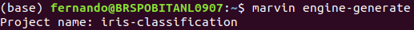
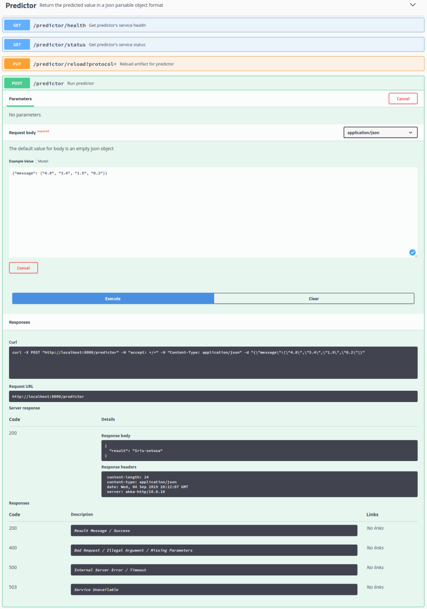

Creating a New Engine¶
In this section are examples of how to create and work with an engine.
To create a new engine:
$ workon python-toolbox-env $ marvin engine-generate
Respond the interactive prompt and wait for the engine environment preparation, and don’t forget to start dev box before if you are using vagrant.
Test the new engine:
$ workon <new_engine_name>-env $ marvin
For more informations:
$ marvin --help
Youtube Tutorial
Creating a Iris Flower Classification Engine example¶
Tutorial for creating an example of the Iris flower classification task on Marvin without using the ready-made engines.
Requeriments¶
- Python 3.7.3
- Pandas 0.25.0
- Scikit-learn 0.21.3
Getting started¶
First, create a new engine for this project. If you don’t know how, access Creating a New Engine.
The engine was named “iris-classification”.
Now, to be able to work on the project, use the following command:
$ workon iris-classification-engine-env
You are now ready to code.
Note: If the workon command “does” not work, type source ~/.bash_profile and try running the command again.
Running tests¶
This project uses py.test as test runner and Tox to manage virtualenvs.
To run all tests use the following command:
$ marvin test
Writting documentation¶
The project documentation is written using Jupyter notebooks. You can start the notebook server from the command line by running the following command:
$ marvin notebook
The notebook is accessed by the browser using the address localhost:8888.
You need to organize the code into cells so that each corresponds to one action of the Marvin-AI Design Pattern DASFE. DASFE
Note that at the end of each cell there is a reserved variable named “marvin_”, those variables will be responsible for creating the artifacts which will be persisted. Also note that you need to import the libraries that will be used in each corresponding cell.
First, you need to load the dataset. This cell it’s the Acquisitor and Cleaner.
#Data Acquisitor
import marvin_iris_classification_engine
from marvin_python_toolbox.common.data import MarvinData
import pandas as pd
file_path = MarvinData.download_file(url="https://s3.amazonaws.com/marvin-engines-data/Iris.csv")
iris = pd.read_csv(file_path)
iris.drop('Id',axis=1,inplace=True)
marvin_initial_dataset = iris
In the next cell we split the dataset to prepare for training. This cell it’s the Training Preparator.
#Training Preparator
from sklearn.model_selection import train_test_split
train, test = train_test_split(marvin_initial_dataset, test_size = 0.3)
train_X = train[['SepalLengthCm','SepalWidthCm','PetalLengthCm','PetalWidthCm']]
train_y = train.Species
test_X = test[['SepalLengthCm','SepalWidthCm','PetalLengthCm','PetalWidthCm']]
test_y = test.Species
marvin_dataset = {'train_X': train_X, 'train_y': train_y, 'test_X': test_X, 'test_y': test_y}
Next is the model training. In this tutorial we used a Support Vector Machine (SVM), but you can use the algorithm of your choice. This phase is the Trainer.
#Model Traning
from sklearn import svm
clf = svm.SVC()
model = clf.fit(marvin_dataset['train_X'], marvin_dataset['train_y'])
marvin_model = model
Here we evaluate model performance utilizing prediction accuracy. This is the Metrics Evaluator.
#Model Evaluation
from sklearn.metrics import accuracy_score
predicted = marvin_model.predict(marvin_dataset['test_X'])
metric = accuracy_score(marvin_dataset['test_y'], predicted)
marvin_metrics = metric
The following message does not enter the DASFE Architecture, we use this for tests purposes while coding in the notebook. Therefore, it will be placed in an isolated cell and will not receive any markup.
input_message = ["12", "34", "10", "23"]
In this cell occurs the reading and transformation of the message which will be further passed to the predictor. In this case, since there is no need to apply any treatment to the input message, the message is already prepared, thus we do not modify variable input_message. This is the Prediction Preparator.
#Prediction Preparator
input_message = input_message
The following cell performs the prediction, being the end result. This stage is the Predictor.
# Predictor
final_prediction = marvin_model.predict([input_message])[0]
Like on the test message, this cell does not enter the DASFE Architecture. This cell is only for checking the result within the notebook itself.
print(final_prediction)
Mark cells on DASFE Architecture¶
To apply mark cells, use the drop-down menu at the top of the Jupyter notebook as illustrated below.

Once the markup is done, the code should look like this:

If everything is correct, save the changes and quit Jupyter Notebook.
Running the Dryrun¶
Marvin dryrun is a way to test your code against DASFE standards.
By default, a String message is sent to dryrun, but because the Iris Classification message should be a list of four numbers (flower characteristics), you must change it to be compatible.
In order to do this, access the engine.messages file inside the folder ../marvin/iris-classification-engine/
The default message should look like this:
[{
"msg1": "Hello from marvin engine!"
}]
Delete the original content and input the following message:
[[1,2,3,4]]
Now it is possible to perform dryrun correctly. At the terminal, type the following command:
$ marvin engine-dryrun
Http Server¶
After executing dryrun without any error raised, it’s possible to generate the project API. Use the following command:
$ marvin engine-httpserver
The server is accessed by the browser using the address localhost:8000/docs.
To test the API, go to Predictor, click in Post, then in Try it out, enter the message and click on Execute as in the image below.
Test message for this example:
{"message": ["4.8", "3.4", "1.9", "0.2"]}